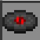

13
Un pezzo ambient in qualche modo inquietante, a tema caverna, costituito principalmente da suoni ambientali sintetizzati echeggiati.
cat
Una leggera melodia in loop suona su un morbido synth ed è unita da un ritmo di percussioni synth.
block
Un allegro pezzo in stile chiptune con un ritmo di valzer strascicato.

chirp
Una melodia retrò con un sample del MATTEL Bossa Nova Style Program Disc[3] del 1970 in sottofondo, insieme a una versione vaporwave di Mall.
far
Una melodia calma e rilassante simile alla natura suonata su un sintetizzatore acquoso echeggiante, accompagnata da altri sintetizzatori che suonano accordi.
Mall
Musica serena suonata su una kalimba insieme ad altri strumenti.